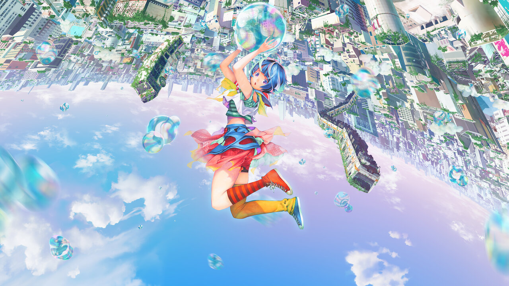

☆Gênero: Ação/ Romance/ esporte
☆lançamento: 13/05/2022
☆diretor(a): Tetsuro Araki
☆Studio: MAPPA
☆classificação indicativa: +12
☆Duração: 1h 40mn
avaliação:★★★☆☆ (3,0)
Sinopse
Em Bubble, após uma chuva de bolhas, uma cidade vira um mundo “sem gravidade”, completamente isolada dos outros locais. Por essa particularidade, o lugar vira um refúgio de jovens órfãos, praticantes de parkour. Hibiki, uma dessas crianças, acaba caindo no mar, fora da cidade sem gravidade, após uma manobra arriscada.